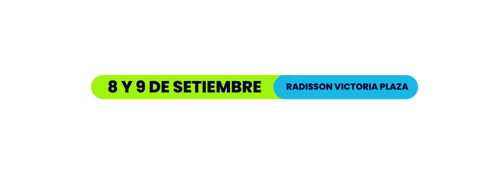
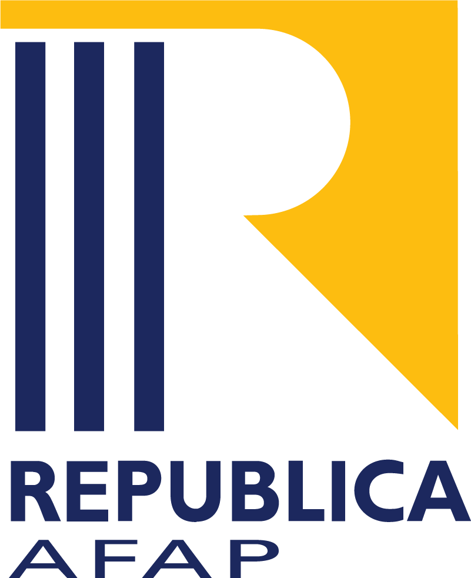
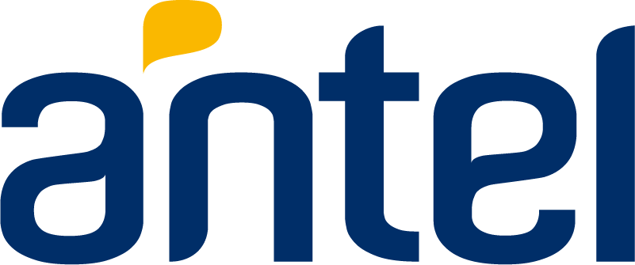
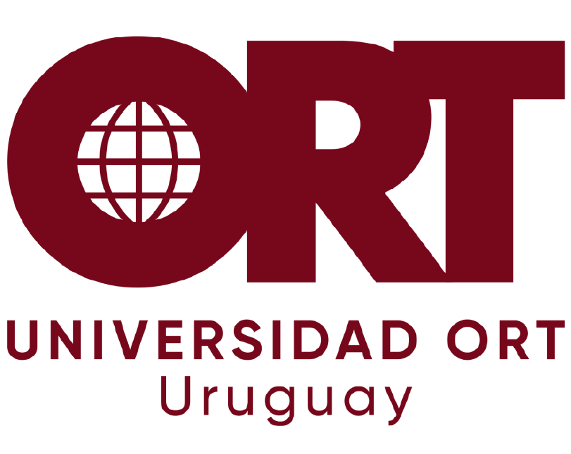
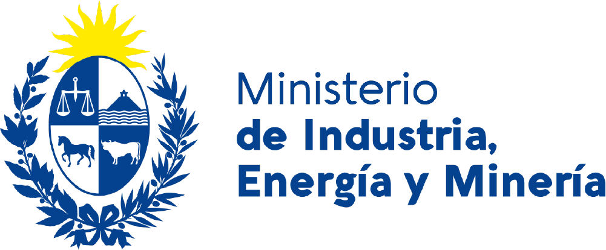
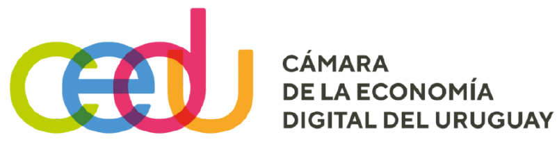
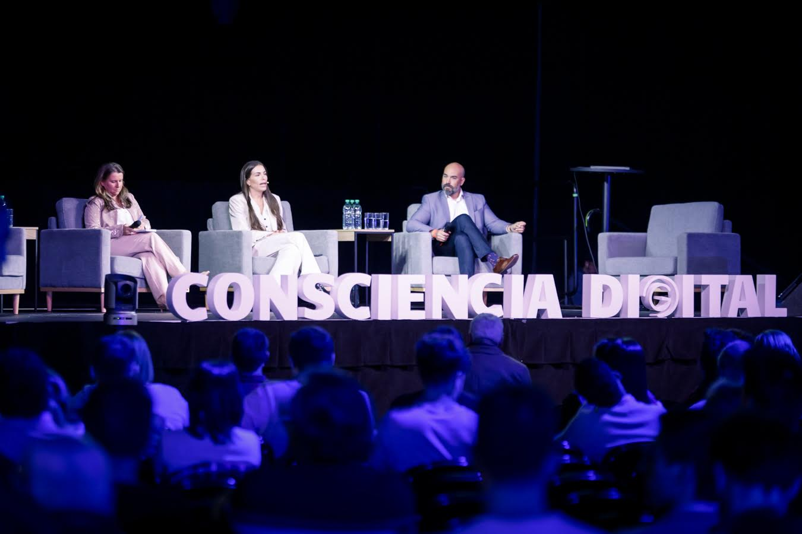

Hoy, el principal riesgo
ya no es técnico.
Es humano.


HumanIA 2026
Reúne a referentes del ámbito educativo, institucional, productivo y tecnológico.
Es una instancia de encuentro dentro de un camino de largo plazo, con foco en inteligencia artificial, ciberseguridad y conciencia digital.
¿Qué es HumanIA?
HumanIA es espacio para pensar, comprender y asumir con criterio el impacto de la inteligencia artificial, la ciberseguridad y la transformación digital en la vida personal, educativa, productiva e institucional.
La tecnología no es neutral. Amplifica decisiones humanas. Por eso, la conciencia, el criterio y la formación son hoy la verdadera línea de defensa.
HumanIA existe para fortalecer la conciencia humana en la era digital. Para quienes entienden que el desafío no se resuelve solo con más tecnología, sino con mejor comprensión y responsabilidad.
Participa



Apoya


La tecnología no es neutral.
Amplifica decisiones humanas.
La conciencia, el criterio y la formación son hoy la verdadera línea de defensa.

Speakers
Referentes del ámbito educativo, tecnológico e institucional.
¿Para Quién es HumanIA?
Estudiantes y docentes
Si sos parte del sistema educativo, HumanIA es un espacio para reflexionar sobre formación, ciudadanía digital y responsabilidad pedagógica frente a tecnologías que ya están en el aula.
Sector público e institucional
Si representás a una institución pública o privada, HumanIA propone un ámbito de diálogo serio sobre gobernanza, soberanía digital, toma de decisiones y desafíos estratégicos en contextos cada vez más automatizados.
Empresas
Si participás del sector productivo o tecnológico, HumanIA invita a mirar más allá de la eficiencia, incorporando ética, impacto humano y sostenibilidad como parte del negocio y de la innovación.
Ciudadanía digital
Si sos simplemente un ciudadano interesado, HumanIA es una invitación a comprender mejor el mundo digital que habitamos y a no delegar criterio en algoritmos opacos.
Si llegaste hasta acá, probablemente HumanIA te interpele desde algún lugar.
Podés profundizar en el proyecto, conocer el sentido del encuentro o explorar las
formas de participar.
Participar del encuentro
Por qué participar
HumanIA no busca convencer ni captar. Busca ofrecer un marco claro para pensar. El encuentro está pensado para ofrecer información confiable, ordenar recorridos, generar diálogo intersectorial y canalizar manifestaciones de interés con responsabilidad.
Participar de HumanIA es formar parte de una conversación necesaria sobre cómo convivimos, decidimos y proyectamos futuro en entornos cada vez más digitales.
Sponsors & Alianzas
HumanIA ofrece a las marcas y organizaciones un espacio de posicionamiento estratégico, donde presentar soluciones, participar del debate sobre el futuro digital y vincularse con decisores, instituciones y referentes del ecosistema educativo y tecnológico.
Las alianzas se construyen desde la coherencia, la reputación y el impacto a largo plazo.